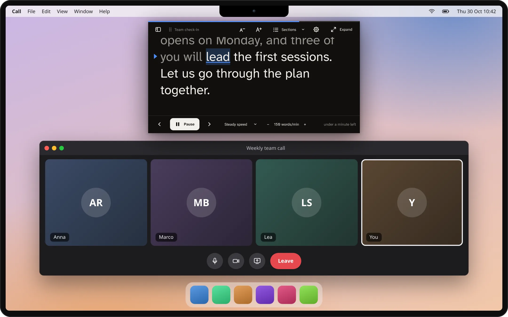
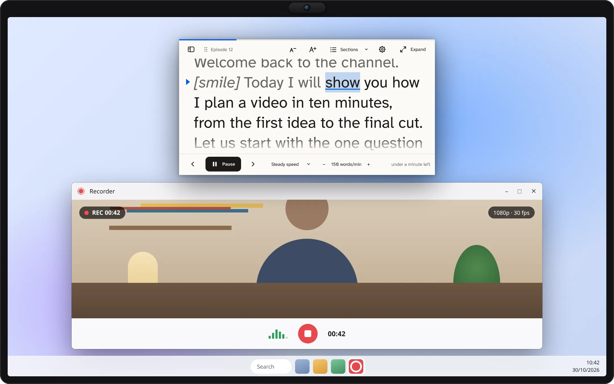

Katso kameraan. Kalipso pitää lukukohtasi tallessa.
Teleprompteri työpöydällesi. Aseta pieni lukunäkymä verkkokameran viereen ja puhu: Kalipso seuraa ääntäsi omalla tietokoneellasi toimivalla puheentunnistuksella, vierittää tasaisesti tai odottaa poljintasi.
Linux sekä versiot KDE Plasmalle ja GNOMElle. Windows ja macOS: kokeelliset. Ei tiliä, ei pilveä.
AvaussanatÄänen seuraaminen · demo
Kiitos kaikille, että olette täällä. [hymyile] Tänään haluan jakaa yhden yksinkertaisen ajatuksen. Teleprompterin pitäisi seurata sinua, ei päinvastoin. Puhu omaan tahtiisi, pidä tauko tarvittaessa ja jatka taas. Lukemasi rivi pysyy tässä samalla korkeudella.
165 sanaa/min
Äänen seuraamisen esittely: nykyinen sana merkitään, jo sanotut sanat himmenevät ja rivisi pysyy samalla korkeudella.
Kolme tapaa pitää lukukohta tallessa
Sinä puhut. Käsikirjoitus pysyy mukana.
Seuraa ääntäsi
Sanomasi sanat himmenevät ja nykyinen rivisi pysyy samalla korkeudella. Tunnistus toimii tietokoneellasi Moonshinella tai Voskillä tai Windowsin ja macOS:n omalla tunnistuksella.
Nuolinäppäimet, jalkapoljin, esityskaukosäädin tai puhelimesi. Voit valita kunkin näppäimen toiminnon.
Kokeile lukunäkymää
Katso, miten lukukohta pysyy tallessa.
Tämä on sovelluksen lukunäkymä selaimessasi. Etene muutama sana, vaihda värejä tai peilaa näkymä teleprompterin lasia varten ja muokkaa sitten käsikirjoitusta. Selainversio ei koskaan tallenna ääntä eikä käsikirjoitustasi.
Esimerkkikäsikirjoitus
Pieni valmistautuminen antaa tilaa paremmalle keskustelulle. Ota rauhassa. Jätä tilaa tauolle.
Manuaalinen demo · Mikrofoni pois päältä
Muutokset näkyvät heti. [Hakasulkeissa olevat ohjeet] näytetään, mutta niitä ei koskaan lueta. Tämä demo nollautuu sivun uudelleenlatauksessa; työpöytäsovellukset tallentavat käsikirjoituksesi.
Käytännössä
Suoraan kamerasi alla, kaikkien sovellusten päällä.
Puhelussa, tallennuksessa tai esityksessä: lukunäkymä pysyy siellä, missä katseesi pitäisi olla, Linuxissa, Windowsissa ja macOS:ssa.

Videopuhelussa · macOSLukunäkymä on juuri kameran alla, jotta säilytät katsekontaktin puhuessasi.

Videon tallentaminen · WindowsTasainen vieritys omalla nopeudellasi tallennuksen aikana, tässä vaaleilla väreillä.Diojen esittäminen · KDE PlasmaPlasma-pienoisohjelma pitää muistiinpanosi tallessa, yksi osio diaa kohti; etene kaukosäätimellä tai nuolinäppäimillä.Verkko-opetus · GNOMEGNOME-laajennus avautuu yläpalkista kaikkien sovellusten päälle.
Havainnollistamista varten piirretyt työpöydät ja sovellukset. Kalipso-ikkunat ovat oikeita kuvakaappauksia nykyisestä versiosta.
Yksityisyys lähtökohtana
Sanasi pysyvät tietokoneellasi.
Ei tiliä, ei pilveä. Käsikirjoitukset ovat tavallisia tekstitiedostoja tietokoneesi kansiossa.
Puheentunnistus toimii paikallisesti. Ääni ei koskaan poistu tietokoneeltasi eikä mitään tallenneta.
Puhelimen kaukosäädin ei koskaan näe käsikirjoitustasi. Se lähettää vain komentoja, kuten aloita, keskeytä ja etene, oman verkkosi kautta.
SANSEVIERIA License 1.0. Lue koodi, käännä se itse ja tarkista, mitä se tekee.
Muita toimintoja
Tehty omaan tapaasi esittää.
Puhujan muistiinpanot ja asiakirjat
Tuo muistiinpanot PowerPointista ja Impressistä, yksi osio diaa kohti, tai Word-, Writer- ja Markdown-asiakirjoja.
Seuraa Impressiä reaaliajassa
Esitä LibreOffice Impressillä, niin lukunäkymä siirtyy näytettävän dian muistiinpanoihin. Linuxissa, Windowsissa ja macOS:ssa.
Peilaus lasia varten
Käännä teksti vaaka- tai pystysuunnassa teleprompterille, jossa on puoliläpäisevä peili ja säilytä säätimet luettavina.
Helpompaa lukemista
Suurempi tai pienempi teksti painikkeilla A− ja A+, mikä tahansa asennettu fontti, myös lukivaikeuksia varten suunnitellut, suuri riviväli ja reunoilta himmenevät rivit.
Kirjoita siellä, missä luet
Yksi ikkuna: suuressa ikkunassa kirjoitat suoraan lukunäkymään lihavoinnin, kursivoinnin, siirryttävien osioiden ja [ohjeiden], kuten [hymyile], painikkeilla. Ohjeita ei koskaan lueta. Kameran alla näkyy vain lukunäkymä.
Miten sujui
Puheistunnon jälkeen: tahti, pitkät tauot ja aika osiota kohti, halutessasi raportiksi tallennettuna.
Asenna
Lataa Kalipso 3.0.
Ilmaiset paketit Linuxille, Windowsille ja macOS:lle ovat julkaisusivulla. Niitä ei ole vielä allekirjoitettu, joten järjestelmä pyytää vahvistusta ensimmäisellä kerralla; SHA256SUMS samalla sivulla auttaa tarkistamaan jokaisen latauksen.
Linux-sovellus
Arch ja EndeavourOS · Debian 13, Ubuntu 24.04 tai uudempi · Fedora
Täysi sovellus: kirjoitus ja lukeminen yhdessä ikkunassa, käsikirjoituskirjasto, tuonti, siirrettävä ja peilattava lukunäkymä, puhelinkaukosäädin ja äänen seuraaminen. Jokainen paketti sisältää myös Plasma-pienoisohjelman, GNOME-laajennuksen ja KWin-komentosarjan.
Arch Linux ja EndeavourOS, käyttövalmiina (kalipso kääntää sen omalla tietokoneellasi):
yay -S kalipso-bin
Debian ja Ubuntu: suorita komento kansiossa, johon tallensit tiedoston .deb julkaisusivulta:
sudo apt install ./kalipso_*_amd64.deb
Fedora: suorita komento kansiossa, johon tallensit tiedoston .rpm julkaisusivulta:
Lukunäkymä työpöydällä tai paneelissa sovelluksessa kirjoittamillasi käsikirjoituksilla. Se sisältyy sovelluksen kaikkiin Linux-paketteihin; ilman sovellusta lisää tiedosto .plasmoid julkaisusivulta. Äänen seuraaminen vaatii Kalipson apupalvelun.
Lukunäkymä yläpalkista sovelluksessa kirjoittamillasi käsikirjoituksilla. Se sisältyy kaikkiin Linux-paketteihin: kirjaudu ulos ja takaisin sisään ja ota se käyttöön Kalipson asetuksissa. Ilman sovellusta asenna sen .zip julkaisusivulta. Laajennus ilmoittaa tukevansa Shell-versioita 48 ja 51, joilla se on testattu.
Apple Silicon · macOS 14.4 tai uudempi · kokeellinen
Sovellus tiedostona .dmg: avaa se ja vedä Kalipso Ohjelmat-kansioon. Valitse ensimmäisellä kerralla Avaa silti kohdasta Järjestelmäasetukset → Tietosuoja ja suojaus. Laitteella toimiva järjestelmän puheentunnistus vaatii macOS 26:n.
Sovellus asennustiedostona .msi tai siirrettävänä arkistona .zip. Jos SmartScreen estää sen, valitse Lisätietojaja sitten Suorita joka tapauksessa. Äänen seuraaminen käyttää Windowsiin asennettuja puheentunnistimia.
Toimiiko se puhelu- tai tallennussovellukseni kanssa?
Kalipso on erillinen lukuikkuna; sitä ei tarvitse liittää tiettyyn kokoussovellukseen. Ikkunoiden sijoittelu ja kaappauksen toiminta vaihtelevat työpöydän mukaan. Testaa oma puhelu- tai tallennusympäristösi ennen kuin luotat siihen.
Näkevätkö muut sen, kun jaan näyttöni?
Windowsissa sovellus pyytää järjestelmää jättämään lukunäkymän pois näytönjaosta ja tallenteista. KDE Plasma 6.6:ssa tai uudemmassa ikkuna jätetään pois sen ollessa kameran alla. macOS ei tarjoa sovelluksille luotettavaa tapaa tehdä tätä, joten jaa siellä yksittäinen ikkuna. Tarkista aina toisen osallistujan näkymä tai tallennettu video ennen esitystäsi.
Voiko se lukea PowerPointin tai Impressin muistiinpanoja?
Kyllä. Erillinen sovellus tuo puhujan muistiinpanot tiedostomuodoista .pptx ja .odp yksi osio diaa kohti. Se voi myös seurata LibreOffice Impress -diaesitystä esittäessäsi ja siirtyä näytettävän dian muistiinpanoihin.
Mitä kieliä se osaa seurata?
Latausluettelossa on Moonshine-mallit englannille, saksalle, espanjalle, japanille ja kiinalle sekä Vosk-mallit näille kielille ja italialle. Tunnistuksen laatu vaihtelee kielen ja mallin mukaan. Manuaalinen ja tasainen lukeminen toimivat kaikilla kielillä. Käyttöliittymä on saatavilla 39 kielellä.
Tallentuuko käsikirjoitukseni automaattisesti?
Kyllä. Erillinen sovellus, Plasma-pienoisohjelma ja GNOME-laajennus tallentavat käsikirjoituksen ja lukukohdan tietokoneellesi kirjoittaessasi. Mitään ei lähetetä verkkoon. Vain tämä selaindemo nollautuu, kun lataat sen uudelleen.
Onko se valmis tärkeään live-esitykseen?
Kalipso 2.0 on ensimmäinen julkinen julkaisu. Tunnistus voi yhä hukata paikkasi, ja testaus oikeilla tietokoneilla ja mikrofoneilla on vielä rajallista. Säilytä kopio muistiinpanoistasi, opettele manuaaliset säätimet ja harjoittele ensin omilla laitteillasi.
Auta tekemään seuraavasta versiosta parempi.
Kerro, mikä toimi, mikä ei ja mitä tarvitset seuraavaa puhettasi tai tallennustasi varten.